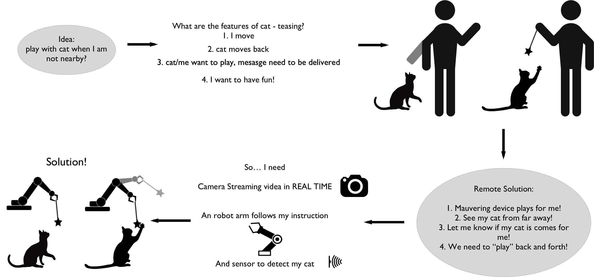

With the development of IoT trend, smart home and smart city is coming into being, for this final project design, we come up with an IoT device not only support human, but also the wellness of pet, specifically, cat in our case.
We have observed a good deal of New York city residents have pets today as their close company, but due to longer hours of work and study, these folks miss their pets during the day. However they can not afford the time to travel back to play with their pets or walk the pets. There are some existing solutions to solve such issue, but not yet an effective solution. Specifically, to relief the pets temporarily from being alone, dog walker is one option right now for dogs. some pet owners use security camera to check the general condition of their pets. Even though monitoring camera has became more accessible and cheap, cameras are limited on providing feedback or interaction.
Our solution is targeting at cats, we want to help these pet owners get to with play with the cat when the owners are not present. And It is going to be helpful for improving cat owners mood throughout the day as well, lower the anxiety level and helps to get rid of some concerns by thinking of the cat. At the same time,this would improve the mental health and activity level of cats.
From the design perspective to analyze the problem, it becomes the question to us: how do we change the interaction between human to you pet, in this case, a cat. My thought process goes like the figure below and our main idea is to use technology to mimic every phase of the interaction between human and cat.
So we landed on the solution of an IoT cat teaser, a device that follows the instructions from cat owner, then also receive feedback from the cat. By making commands from smart phone APP to the robotic arms, pet owners can control the interaction and movement of the robotic arm, The instruction will be coming from smartphone or mobile device using IOT platforms.